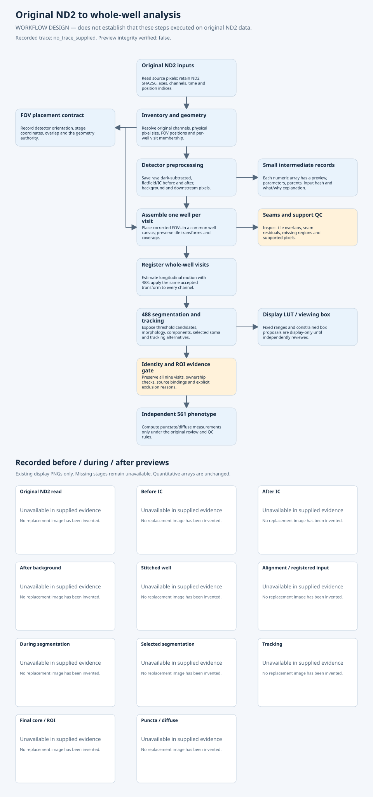
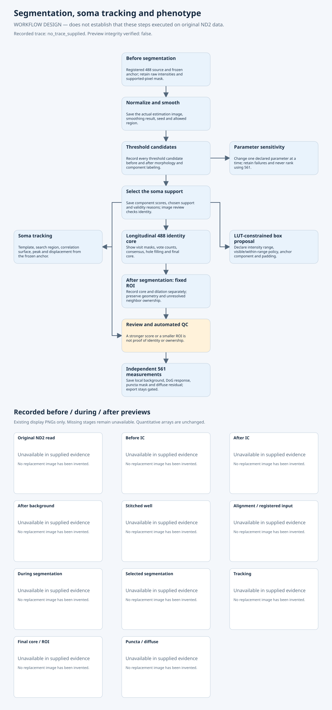

These are workflow designs. Recorded previews, when available, are copied from an integrity-verified trace. Trace integrity does not establish original ND2 processing, scientific accuracy, track approval or biological inference.
Graphic provenance and missing stages

